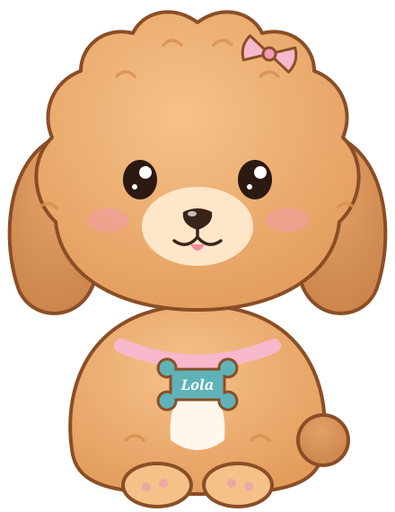

Lola June
Hi, I'm Lola June. This week I'm riding along at Cowford Logistics' Westside distribution center, where I supervise the dock and inspect every box at nose height. Let's spend a shift looking at quality the way an operations manager would.
How this walk works
There are five stops, one for each section of the W11.A reading, so keep it open in another tab.
- Predict. Commit to a quick guess before you touch anything. There's no score; the point is to notice when your intuition is wrong.
- Explore. Move the sliders, flip the switches, and watch the warehouse respond.
- Lola's take. When you're ready, open my explanation and compare it with what you saw.
This is not the classroom lab, and it isn't the W11.C or W11.D quiz. The data here is illustrative Cowford Logistics data and does not carry over to any of them. Nothing on this page is stored. If you refresh or leave, it starts fresh.
Stop 1 of 5 · W11.A Section 1 · about 6 minutes
Is it the picker or the system?
Lola June
First, a warm-up: quality means different things to different people. Then a real problem. Last month the day shift made 78 mis-picks, and the shift lead wants to retrain the picker with the most errors. Deming would have something to say about that.
Explore: three kinds of quality
Classify each customer comment as conformance, performance, or perceived quality.
Explore: who is making the mis-picks?
Each bar is one picker's mis-picks last month. The darker part happened at look-alike bin pairs, where two similar products sit side by side with near-identical labels.
At look-alike bins Other errors
Lola's take
Retraining Picker E took the shift from 78 mis-picks to 75, about 4% fewer. Fixing the bins took it to 30, about 62% fewer, because 60 of the 78 errors (77%) happened at look-alike bins that every picker uses. Picker E wasn't careless; Picker E just walked past those bins the most. That's Deming's point in Section 1: most quality problems live in the system management designed, so fixing the system beats blaming the person.
The three comments show why "quality" needs a definition first. An on-time, complete order is conformance; tighter temperature control than competitors is performance; nicer trucks with no change in service is perceived quality. Operations controls conformance most directly.
Stop 2 of 5 · W11.A Section 2 · about 9 minutes
The cost of quality
Lola June
A mis-pick costs almost nothing if you catch it at the shelf, and a lot if a customer catches it. Let's follow one error down the line. Then you'll set Westside's prevention budget and watch all four cost of quality categories move.
Explore: catch it early or catch it late
Explore: set the prevention budget
Prevention Appraisal Internal failure External failure
Model assumptions: 120,000 orders a year; a 2% error rate at today's prevention level, falling toward a 0.4% floor that prevention alone cannot remove; 60% of errors caught in the building at $12 each; the rest reach the customer at $95 each.
Lola's take
The same mis-pick costs $1.50 at the shelf and $95 at the customer, about 63 times more. The first three catch points are internal failure; the last is external failure, and it carries costs no invoice shows, like a grocer quietly moving volume to a competitor.
Raising prevention from $15,000 to $45,000 lowered the total, from about $183,500 to about $167,700, because failure costs fell by more than the extra spending. Let inspection shrink as errors fall, as the textbook expects, and the best budget moves to about $60,000, with a total near $148,300. But keep sliding: at $150,000 the total climbs back above $200,000. Prevention pays only when it is aimed at causes you can actually remove. And never "save" on quality by hiding a known problem: Krajewski's ethical failure costs can dwarf the other four categories combined.
Stop 3 of 5 · W11.A Section 3 · about 7 minutes
TQM on the warehouse floor: the Pareto chart
Lola June
TQM runs on facts, not hunches. Last quarter the team kept a check sheet of every order error, wherever it was found. Let's turn it into a Pareto chart and decide where the first improvement project should go.
Explore
Errors your project targets: 0 of 600 (0%)
Which TQM principle is this?
Pickers suggest color-coding look-alike bins. The supervisor starts a weekly 15-minute huddle where pickers bring problems and ideas.
A manager wants to put the three pickers with the most errors on written warning. Which principle does that ignore?
Lola's take
Two causes, wrong item and wrong quantity, make up 417 of 600 errors, about 70%. Wrong item alone is nearly half. The check sheet listed causes in the order people happened to write them; the Pareto chart sorts them so the vital few jump out. That's TQM's fact-based decisions in practice, and it points straight back at the look-alike bins from Stop 1.
"Damaged in transit" is real and visible, which makes it tempting, but it's 13% of the problem. Start where the data says. And the huddle and the written warnings are two sides of the same coin: TQM asks the people doing the work what the process gets wrong, and it fixes the process instead of the person.
Stop 4 of 5 · W11.A Section 4 · about 10 minutes
DMAIC, DPMO, and service quality
Lola June
The team turns the wrong-item problem into a Six Sigma project. First, put the project's steps in DMAIC order. Then we'll score Westside's sigma level, and find out that the score depends on a definition. Last, the delivery customers get their say.
Explore: the DMAIC sequence
Assign each project step to its DMAIC phase.
Assigned 0 of 5
Explore: DPMO and the sigma level
Explore: what delivery customers say (SERVQUAL)
Survey of 140 delivery customers, 1–7 scale. Gap = perception minus expectation.
| Dimension | Example | Expect | Perceive | Gap |
|---|
Where should Cowford Logistics invest first?
Lola's take
DMAIC is a project with an order to it: define the problem before you measure it, measure before you analyze, and prove the cause before you pilot a fix. Control is the step teams skip, and it's why gains quietly slip away.
Counting one opportunity per order gives 20,000 DPMO, about 3.55 sigma. Counting four lines per order gives 5,000 DPMO, about 4.08 sigma. Same 600 errors, and customers still see 20 bad orders in every 1,000. DPMO counts per opportunity, so always state what counts as one before you compare sigma levels. And the survey says Reliability has the biggest gap, −1.4 points, while Tangibles is already above expectations. Paint won't fix late trucks.
Stop 5 of 5 · W11.A Section 5 · about 8 minutes
Cold-chain capability: Cp and Cpk
Lola June
Refrigerated loads for grocers and clinics must stay between 2 and 8 °C. The trailers' temperature process is stable, so the question is whether it's capable. Cowford's standard is four-sigma, a critical value of 1.33. I prefer my water bowl a little cooler than that.
Explore
Load temperatures Outside specification Specification limits
Lola's take
At a 5.9 °C average with σ = 0.7, Cp is 1.43 but Cpk is only 1.00: the spread fits the 2–8 window with room to spare, but the process sits too close to the 8 °C limit, so about 1,350 loads per million run warm. Move the set point to 5.0 and Cpk rises to 1.43, with no new equipment, and the expected loads outside the 2–8 window fall to about 18 per million. That's the textbook test from Section 5: judge capability on Cpk, and when it fails, Cp tells you whether to recenter or reduce variation.
Push σ up to 1.0 and Cp drops to 1.00. Now no set point passes at 1.33, because the variation itself is the problem. Widening the specification isn't an operations decision; food and medicines have safety limits for a reason. One caution: Cp and Cpk assume a roughly normal distribution. Dock dwell times, which can't go below zero and have long tails, would need a different approach.
Lola June
That's the end of the shift. Every box passed my inspection, mostly because I'm easily impressed. Thanks for riding along.
Five ideas to carry forward
- Fix the system, not the person. Most errors come from how the work is designed, and everyone's errors fall when the design improves.
- A defect gets more expensive the later it's caught. Well-aimed prevention lowers the total cost of quality, until you start buying improvements you can't get.
- Let the data pick the project. A Pareto chart shows the vital few causes; TQM asks the people closest to the work.
- DMAIC is an ordered project, and DPMO depends on what counts as an opportunity. State your definition before comparing sigma levels.
- Judge capability on Cpk, then use Cp to diagnose. If Cp passes, recenter; if Cp fails, reduce variation.
Where to next
- Check your understanding with the W11.C Concept Check in Canvas.
- Apply it on your own in the W11.D Cowford Application Quiz in Canvas. It uses a different subsidiary and different numbers, so nothing here carries over directly.
- Practice with your class in the Week 11 classroom lab.